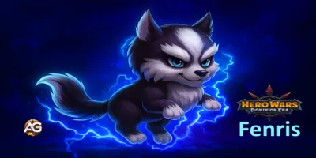
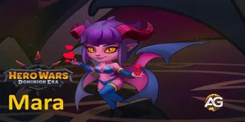

Guia do Mascote Biscuit em Hero Wars: Dominion Era
Guia do Mascote Biscuit em Hero Wars: Dominion Era
 Guia do Mascote Cain em Hero Wars: Dominion Era
Guia do Mascote Cain em Hero Wars: Dominion Era

Guia do Mascote Fenris em Hero Wars: Dominion Era Guia do Mascote Khorus – Hero Wars: Dominion Era | Atributos, Função e Como Usar
Guia do Mascote Khorus – Hero Wars: Dominion Era | Atributos, Função e Como Usar

Guia do Mascote Mara em Hero Wars: Dominion Era Guia do Mascote Merlin em Hero Wars: Dominion Era
Guia do Mascote Merlin em Hero Wars: Dominion Era